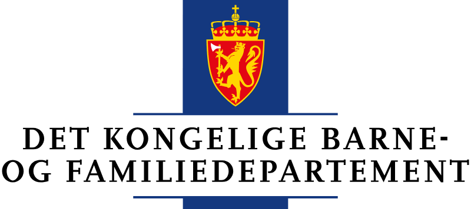
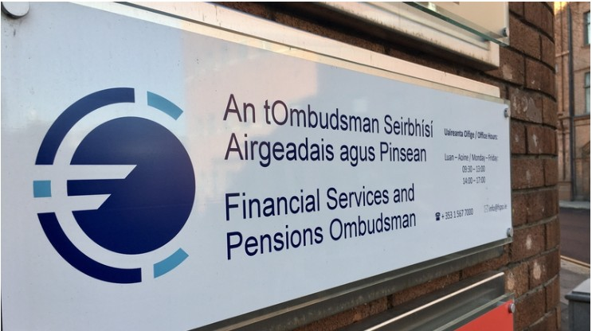

Hvem passer på Finansklagenemnda?
8. aug 2026
Finansklagenemnda er privat, finansiert av finans- og forsikringsnæringen og behandler tusenvis av tvister mellom forbrukere og finansforetak hvert år. Samtidig er klageordningen offentlig godkjent. Det gjør ett spørsmål særlig viktig: Hvor grundig kontrollerer staten at kravene til uavhengighet og upartiskhet faktisk er oppfylt?
Finansklagenemnda har en sentral rolle når norske forbrukere havner i konflikt med banker og forsikringsselskaper.
I 2025 mottok FinKN 8 978 skriftlige henvendelser. Av 8 321 avsluttede saker fikk hele 84 prosent sin endelige avslutning i sekretariatet. Bare 1 324 saker endte med en nemndsavgjørelse.
For mange forbrukere vil domstolene være et dyrt og lite realistisk alternativ. FinKN får derfor stor betydning for hvilke tvister som faktisk blir prøvd videre.
Privat, bransjefinansiert – og offentlig godkjent
FinKN beskriver selv virksomheten som et «bransjebasert utenrettslig tvisteløsningsorgan».
Forsikrings- og finansnæringen har seks av ni styreplasser. Virksomheten finansieres gjennom innbetalinger fra foretakene som er tilknyttet ordningen.
Styret fører tilsyn med sekretariatets virksomhet og fastsetter nødvendige retningslinjer for sekretariatet. Styret fastsetter også saksbehandlingsreglene.
Samtidig skal sekretariatet opptre nøytralt og uavhengig.
Dette er ikke nødvendigvis en motsetning. Men konstruksjonen gjør det viktig å vite hvor grensen faktisk går mellom legitim administrativ styring og den selvstendige faglige behandlingen av forbrukernes klager.
Det er særlig interessant når sekretariatet selv avslutter flere tusen saker hvert år.
Hvilke interne føringer gjelder for denne behandlingen? Hvem fastsetter dem? Og hvordan kontrolleres det at styringen ikke påvirker den uavhengigheten forbrukerne skal kunne stole på?
Staten har ansvaret for godkjenningen
FinKN er godkjent etter lov om godkjenning av klageorganer for forbrukersaker. Loven gjennomfører EØS-regler som stiller krav til blant annet uavhengighet, upartiskhet og kvalitet i den utenrettslige tvisteløsningen.
Barne- og familiedepartementet er godkjenningsmyndighet.

Etter godkjenningsloven § 9 kan departementet til enhver tid kreve de opplysningene det trenger for å ivareta denne myndigheten.
Dersom et godkjent klageorgan ikke lenger oppfyller kravene, inneholder loven også regler om retting og i siste instans tilbakekall av godkjenningen.
Den offentlige godkjenningen er dermed ikke bare et spørsmål om hvordan FinKN var organisert den dagen godkjenningen ble gitt.
Kravene skal fortsatt være oppfylt.
Hvem kontrollerer kontrolløren?
FinKN skal være et uavhengig alternativ når en forbruker kommer i konflikt med finansnæringen.
Samtidig er ordningen privat, finansiert av næringen selv, næringen har flertall i styret, og styret fastsetter rammer og retningslinjer for et sekretariat som avslutter hoveddelen av sakene.
Ingen av disse forholdene dokumenterer i seg selv at FinKN mangler uavhengighet.
Men de gjør den offentlige kontrollen desto viktigere.
Hva vet Barne- og familiedepartementet om hvordan FinKN faktisk styres? Hvor grundig undersøkes sekretariatets uavhengighet? Og hva bygger staten på når den fortsatt lar FinKN være Norges offentlig godkjente klageorgan på finansområdet?
Forbrukerne bør kunne forvente gode svar på disse spørsmålene.
Andre land har valgt en annen modell
Den norske modellen er ikke den eneste måten å organisere utenrettslig tvisteløsning på. I Sverige er Allmänna reklamationsnämnden (ARN) en statlig myndighet, finansiert i hovedsak over statsbudsjettet. Finansnæringen kontrollerer dermed ikke selve klageorganet.
Irland har gått enda lenger på finansområdet. Financial Services and Pensions Ombudsman (FSPO) er et lovopprettet, uavhengig offentlig klageorgan. Finansforetakene bidrar til finansieringen gjennom en lovbestemt sektoravgift, men det er ikke bransjen selv som eier eller styrer klageordningen. Ombudsmannens avgjørelser er rettslig bindende for partene og kan ankes til High Court.

Disse modellene viser at det er fullt mulig å la finansnæringen være med på å finansiere kostnadene ved tvistene, samtidig som selve tvisteløsningsorganet organisatorisk ligger utenfor bransjens styring.